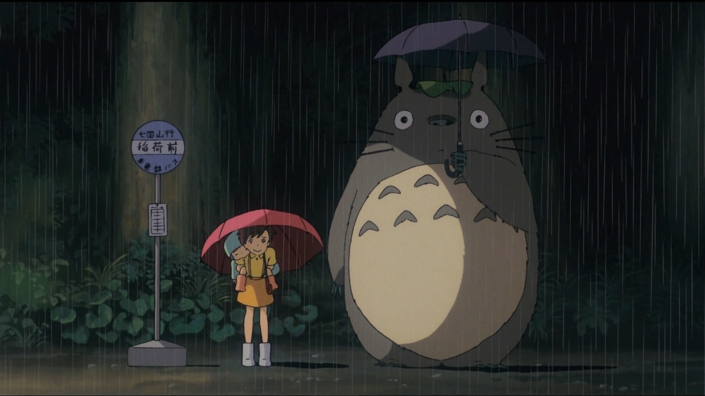
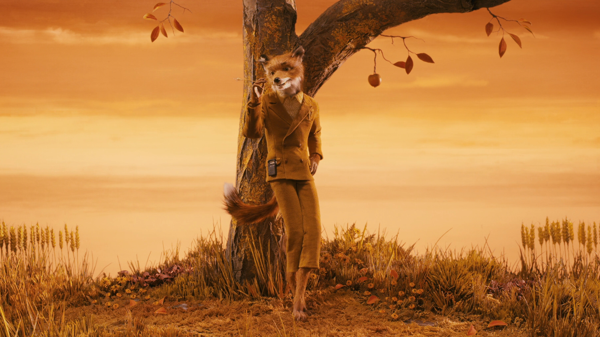
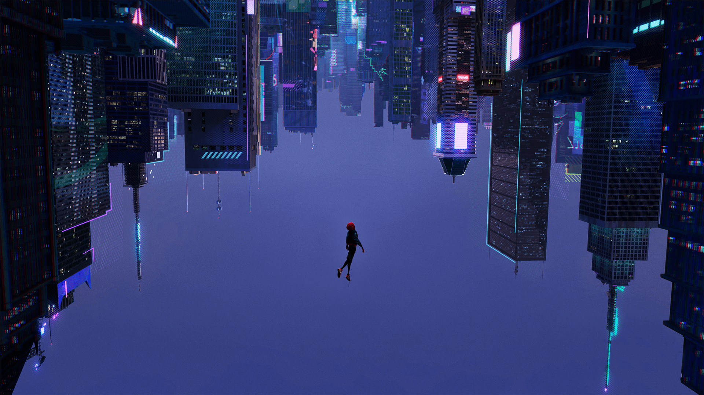
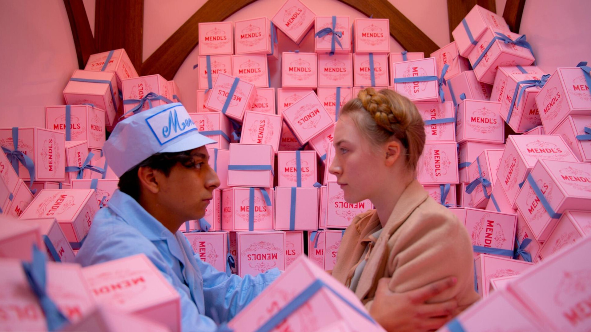
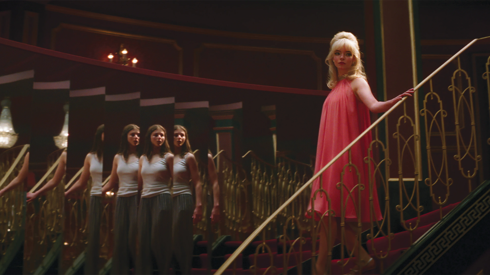
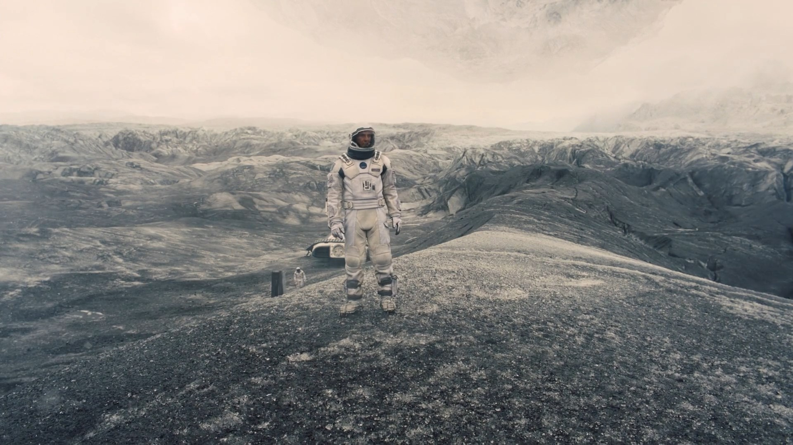

This page pays homage to some of my all-time favourite shots in film. Unsuprisingly, a number of these
happen to be from some of my favourites as outlined on the homepage.
Click through the gallery to
learn more about each shot!

Whiplash, 2014
Fletcher screams at his to-be protégé.

My Neighbour Totoro, 1988
Totoro and Mei wait for a bus in the rain.

Fantastic Mr Fox, 2010
Mr Fox admires his new home.
Aftersun, 2022
Sophie and her father Callum watch the sun-set over the beach.

Into The Spiderverse, 2018
Miles takes a leap of faith.
Inception, 2010
Cobb's totem begins to topple, before the movie cuts.

The Grand Budapest Hotel, 2014
A young Zero and Agatha meet in Mendels van.

Last Night In Soho, 2021
Eloise / Sandy walk into the Café de Paris for the first time.
Babylon, 2023
Nellie LaRoy parties into stardom.

Interstellar, 2014
Cooper sets foot on Mann's Planet for the first time